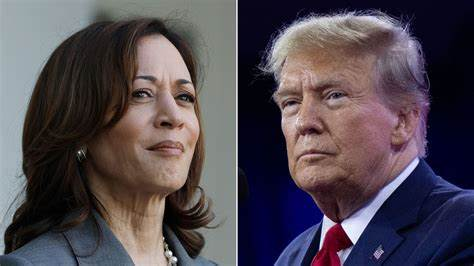

据报道，7月21日，拜登突然在其个人社交媒体上表示，自己本打算寻求连任，但为了民主党和美国的“最佳利益”，他决定退出总统竞选，并专注于完成任期内的总统职责。
此前，尽管面临重重挑战，但在公众面前，拜登一直在坚持，已多次表态“不会退选”。他曾表示，“这场竞选还有很长的路要走，我将继续前进。”
不过，民主党人告诉美国新闻网站Axios，私下里，拜登其实已经开始“屈服于”日益增长的压力。
根据美媒分析，拜登退选至少有两重原因：一是“糟糕的民意调查结果”，二是“站不住脚的审查”，外界巨大的压力让他很难继续参与竞选。
越来越多的民调结果显示，“拜登输给了特朗普”。自6月底“拜特对决”的首场电视辩论以来，许多民众对拜登的表现感到不满。根据美国有线电视新闻网当晚公布的即时民意调查，67%收看辩论的观众认为特朗普获胜，33%认为拜登获胜。
拜登日前又再次感染新冠并出现轻微症状，在特拉华州的家中隔离，并居家办公。按法新社、路透社说法，拜登此次复阳正值竞选“关键时刻”，一方面，竞选对手特朗普逃过刺杀、已正式成为共和党总统候选人，另一方面，拜登面临的党内退选呼声渐涨。
一项来自美联社的最新民意调查显示，近三分之二的民主党人希望拜登退出总统竞选。来自佛蒙特州的彼得·韦尔奇，成为首位公开呼吁拜登退选的民主党参议员。
据美媒报道，民主党重量级人物，包括前众议院议长佩洛西、前总统奥巴马、参议院多数党领袖舒默等，也对民主党选情表示担忧。此外，一些民主党“金主”搁置了对拜登的竞选资金捐助，这进一步加大了拜登面临的退选压力。拜登在宣布退选的同时，还表示，自己全力支持副总统哈里斯成为民主党总统候选人，“这是我做出的最好的决定”。
拜登强调，“民主党人们，是时候团结起来打败特朗普了。让我们完成这一切。”
哈里斯随后也发表声明称，她“很荣幸”得到拜登的支持，将尽力赢得民主党总统候选人提名。
美国有线电视新闻网分析称，尽管拜登支持哈里斯，但目前尚不清楚哈里斯是否能成为民主党总统候选人，或者接下来该党将采取何种程序选择总统候选人。
7月初，拜登曾与副总统哈里斯举行了面对面的会谈。当时就有外媒指出，这位副总统可能会替代总统拜登，成为2024年美国大选的民主党总统候选人。
值得一提的是，拜登和特朗普在6月27日辩论时，两人没有握手。10日晚辩论开始前，哈里斯走到特朗普面前伸出了手，特朗普接受了握手。但这一礼节性的举动无法掩盖当天辩论的火药味。
双方在握手后，围绕美国经济、移民、堕胎以及俄乌冲突、巴以局势等问题展开辩论。
● 在移民问题上，哈里斯主张进行全面移民改革，她指责特朗普阻拦国会推进相关立法工作；特朗普则试图将美国的“边境危机”归咎于拜登和哈里斯，同时承诺上台后实施“美国历史上规模最大的遣返行动”。
● 对于2021年1月6日国会山暴乱事件，哈里斯称，特朗普煽动支持者当天前往国会山，而特朗普否认对暴乱事件负有责任。
● 在巴以问题上，特朗普认为，哈里斯仇恨以色列；哈里斯则表示将继续支持以色列，同时推动停火谈判。
谁是赢家？
辩论中，双方几乎没有共识，在许多国内外问题上表现出截然相反的观点。不过双方都对自己的表现十分满意。
